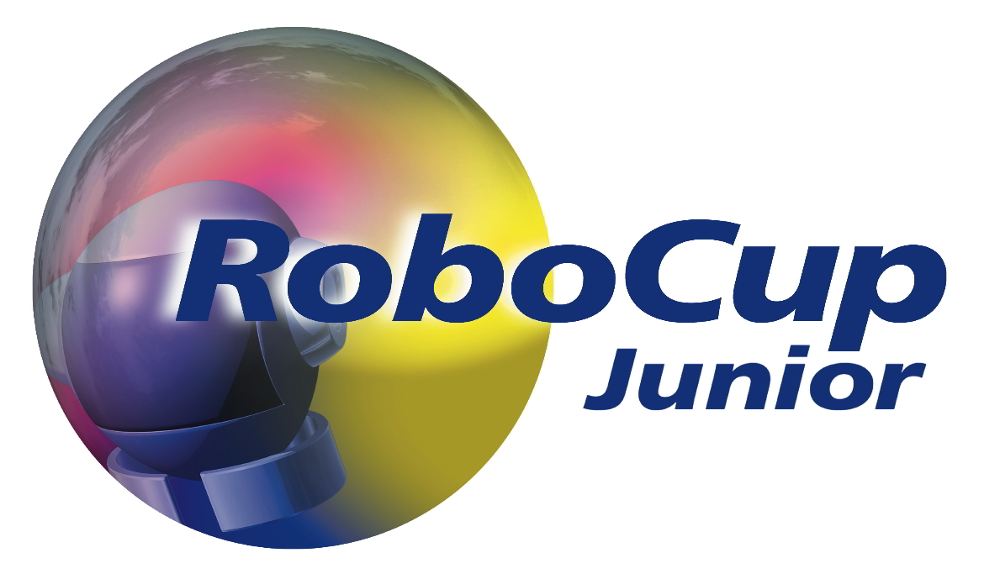
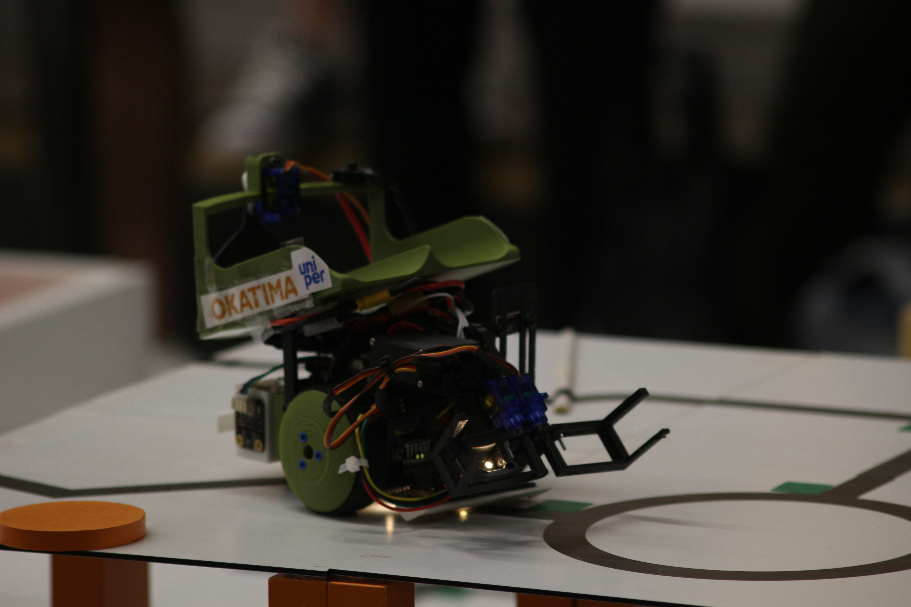

About Robocup
RoboCup is an annual international robotics competition founded in 1996 by a group of university professors (including Hiroaki Kitano, Manuela M. Veloso, Itsuki Noda and Minoru Asada). The aim of the competition is to promote robotics and AI research by offering a publicly appealing – but formidable – challenge.
STEN
Our robocup team
We are the swesish team compeeting in robocup junior rescue line
Swedish shampionship 2023
During the swesish championship 2023 we compeeted with a camerabased system and finnished in 6:th place
Swedish shampionship 2023
During the swesish championship 2024 we managed to win using an infrared array powered by an arduino nano

World Cup 2024
At the world championship 2024 we finnished 19th with a victory in on smaller competition. The competition was held in Eindhoven in the netherlands
Contact Us
Email: your-email@example.com